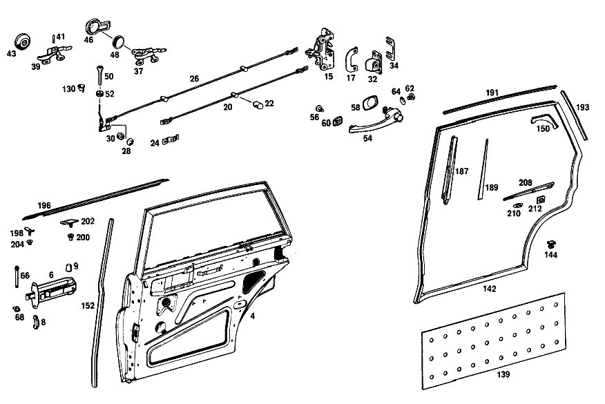

| № | Артикул | Название | Кол. | Примечание | Ограничение |
|---|---|---|---|---|---|
| 4 | A 110 730 14 05 | ОСТОВ ДВЕРИ | 1 | СПРАВА | |
| 6 | A 110 730 01 16 | КРОНШТЕЙН ДВЕРИ | - | ||
| 8 | A 110 723 00 96 | - БУФЕР | 2 | ||
| 9 | A 110 723 00 24 | - КОЛПАЧОК | - | [415] ПРИМЕЧ. ПО ЗАМЕНЕ ПРИМЕНИМО ТОЛЬКО ДЛЯ СТОЯЩИХ РЯДОМ ПОЗИЦИЙ | |
| 15 | A 110 730 12 35 | ЗАМОК ДВЕРИ | 1 | RIGHT, LESS INTERIOR LOCKING MECHANISM [002] 010 FROM CHASSIS 004466;012 FROM CHASSIS 009780 | |
| 17 | A 110 723 06 24 | ОБРАМЛЕНИЕ | - | ||
| 17 | A 108 723 02 24 | ОБРАМЛЕНИЕ | 1 | RIGHT BETWEEN LOCK AND DOOR LINING [002] 010 FROM CHASSIS 004466;012 FROM CHASSIS 009780 | |
| 20 | A 110 730 00 92 | ПРИВОДНАЯ ШТАНГА | 2 | ЗАДНЯЯ ДВЕРЬ | |
| 22 | A 120 987 01 37 | - ФИТИНГ | - | ||
| 24 | H 10 180 723 00 55 | - ПРЕДОХРАНИТЕЛЬ | - | ||
| 26 | A 110 730 02 93 | ПРЕДОХР. БЛОКИР. ДВЕРИ | - | ||
| 26 | A 110 730 04 93 | ПРЕДОХР. БЛОКИР. ДВЕРИ | 1 | RIGHT REAR DOOR | |
| 28 | N 900055 008002 | - Пружинная шайба | 2 | ||
| 30 | A 120 991 04 35 | - ДИСТАНЦИОННОЕ КОЛЬЦО | 2 | ||
| 32 | A 110 720 12 04 | ПЕТЛЯ | 1 | СПРАВА | |
| 34 | A 110 723 02 11 | ПЛАСТИНА | - | ||
| 34 | A 100 723 02 11 | Компенсационная пластина | NB | ПО НЕОБХОДИМОСТИ 2.0 MM [409] ПРИ МОНТАЖЕ ПОДОГНАТЬ ПО МЕСТУ | |
| 37 | A 110 760 10 61 | РУЧКА ВНУТРЕННЯЯ | 1 | RIGHT REAR DOOR [003] 010 UP TO CHASSIS 021371 EXCEPT FOR 021350,021362,021363,021364 | |
| 39 | A 110 760 12 61 | РУЧКА ВНУТРЕННЯЯ | 1 | RIGHT REAR DOOR [004] 010 FROM CHASSIS 021372 ALSO INSTALLED ON 021350,021362,021363,021364 | |
| 41 | H 10 180 766 00 15 | - БОЛТ | 2 | LEVER HANDLE TO MOUNTING PLATE [004] 010 FROM CHASSIS 021372 ALSO INSTALLED ON 021350,021362,021363,021364 | |
| 43 | A 180 760 01 81 | РОЗЕТКА | 2 | [004] 010 FROM CHASSIS 021372 ALSO INSTALLED ON 021350,021362,021363,021364 | |
| 46 | A 110 766 06 11 | РОЗЕТКА | 1 | СПРАВА [003] 010 UP TO CHASSIS 021371 EXCEPT FOR 021350,021362,021363,021364 | |
| 48 | A 110 766 06 90 | ВСТАВКА | 2 | ||
| 50 | A 110 760 05 65 | ПРЕДОХРАНИТЕЛЬНАЯ ГОЛОВКА | 2 | ПРЕДОХР. БЛОКИР. ДВЕРИ | |
| 52 | A 000 997 42 81 | втулка | 2 | KNOB TO LOCK ROD [005] 010 UP TO CHASSIS 049952 K11/H31 GREY TRIM UP TO CHASSIS 049995 K12 BLUE TRIM UP TO CHASSIS 050016 K14/K3 TRIM | |
| 54 | A 110 766 03 02 | РУЧКА ДВЕРИ | 2 | СНАРУЖИ | |
| 56 | A 120 766 00 15 | - БОЛТ | 2 | [402] БОЛЬШЕ НЕ ПОСТАВЛЯЕТСЯ | |
| 58 | A 110 766 00 05 | ПОДКЛАДКА | 2 | REAR для DOOR HANDLE | |
| 60 | A 110 766 01 05 | ПОДКЛАДКА | - | ||
| 60 | A 120 766 00 05 | ПОДКЛАДКА | 2 | FRONT для DOOR HANDLE | |
| 62 | N 007985 006150 | Винт | 2 | DOOR HANDLE TO REAR DOOR INTERIOR PLATE | |
| 64 | A 111 993 00 26 | ПРУЖИНА ДИСКОВАЯ | 2 | DOOR HANDLE TO REAR DOOR INTERIOR PLATE | |
| 66 | A 110 991 03 07 | БОЛТ | 2 | ОГРАНИЧИТЕЛЬ ХОДА ДВЕРИ НА ЦЕНТРАЛЬНОЙ СТОЙКЕ | |
| 68 | A 000 994 00 51 | ПРЕДОХРАНИТЕЛЬ | - | ||
| 71 | A 110 735 01 09 | ЗАЩИТНОЕ СТЕКЛО | 2 | ||
| 73 | A 110 735 02 24 | УПЛОТНИТЕЛЬ | 1 | СПРАВА | |
| 75 | A 000 988 39 78 | Скоба | 4 | FIXED WINDOW TO INTERIOR PLATE,BOTTOM [402] БОЛЬШЕ НЕ ПОСТАВЛЯЕТСЯ | |
| 77 | A 110 730 04 19 | ПОПЕРЕЧИНА ОКНА | 1 | RIGHT REAR DOOR | |
| 82 | A 110 730 06 15 | FE. САЛАЗКИ | 1 | RIGHT LOCK SIDE | |
| 86 | A 000 985 18 30 | ПРОФИЛЬ ГЕРМЕТИЗИРУЮЩИЙ | 2 | 2110 MM [404] ЗАКАЗЫВАТЬ ПОГОННЫМИ МЕТРАМИ | |
| 88 | A 002 988 23 78 | Скоба | 10 | WINDOW GUIDE RAILS TO WINDOW FRAMES,AND GARNISH MOULDINGS TO DOOR FRAMES | |
| 90 | A 110 735 02 02 | СТЕКЛОПОДЪЕМНИК | 1 | RIGHT REAR DOOR | |
| 92 | A 000 768 01 05 | - ПРУЖИНА | - | ||
| 92 | A 000 768 09 05 | - Компенсационная пружина | - | ||
| 92 | A 000 768 07 34 | - пружина | 2 | ||
| 96 | A 110 730 02 45 | FE.ПОДЪЕМНАЯ ПЛАНКА | 1 | RIGHT REAR DOOR | |
| 98 | A 120 984 01 37 | ПОЛЗУН | - | ||
| 100 | A 000 984 24 56 | Диск | - | [415] ПРИМЕЧ. ПО ЗАМЕНЕ ПРИМЕНИМО ТОЛЬКО ДЛЯ СТОЯЩИХ РЯДОМ ПОЗИЦИЙ | |
| 102 | A 000 990 05 48 | Диск | - | ||
| 104 | A 110 735 00 10 | ЗАЩИТНОЕ СТЕКЛО | 2 | ||
| 106 | A 110 720 00 47 | ПЛАНКА КРЕПЕЖНАЯ | 2 | ||
| 108 | A 000 987 66 57 | Уплотнитель стекла | 2 | 340 MM [402] БОЛЬШЕ НЕ ПОСТАВЛЯЕТСЯ [404] ЗАКАЗЫВАТЬ ПОГОННЫМИ МЕТРАМИ | |
| 111 | A 110 760 04 02 | КРИВОШИП | 2 | ||
| 114 | A 110 768 01 95 | ОБИВКА | 2 | ПОДВИЖН. СТЕКЛО | |
| 116 | A 110 768 00 13 | ШАЙБА | - | ||
| 118 | A 000 985 03 30 | ПРОФИЛЬ ГЕРМЕТИЗИРУЮЩИЙ | - | ||
| 120 | A 001 988 17 78 | СКОБА | 8 | OUTSIDE SEAL RAILS TO DOORS | |
| 122 | A 001 988 23 78 | Скоба | 8 | INSIDE SEAL RAILS TO DOORS | |
| 126 | A 111 730 16 51 | Обшивка | 1 | BOTTOM,RIGHT REAR DOOR [402] БОЛЬШЕ НЕ ПОСТАВЛЯЕТСЯ [012] 012 FROM CHASSIS 124453 ALSO INSTALLED ON 120370-121079 COLOR:BLUE FROM CHASSIS 125083 COLOR:GREY FROM CHASSIS 126748 COLOR:BROWN FROM CHASSIS 129311 COLOR:GREEN [014] WHEN ORDERING,STATE COLOR AND CHASSIS NUMBER | |
| 128 | A 001 988 28 78 | СКОБА | - | ||
| 128 | A 002 988 45 78 | Скоба | 8 | WINDOW MOULDINGS TO EDGES | |
| 130 | A 112 725 01 70 | РОЗЕТКА | - | [415] ПРИМЕЧ. ПО ЗАМЕНЕ ПРИМЕНИМО ТОЛЬКО ДЛЯ СТОЯЩИХ РЯДОМ ПОЗИЦИЙ | |
| 139 | A 111 727 52 90 | ШУМОИЗОЛЯЦИЯ | - | ||
| 139 | A 123 727 00 90 | ШУМОИЗОЛЯЦИЯ | - | ||
| 139 | A 110 727 03 90 | Шумоизол. двери водителя | - | ||
| 139 | A 210 682 00 08 | Шумоизоляция двери | - | [409] ПРИ МОНТАЖЕ ПОДОГНАТЬ ПО МЕСТУ | |
| 139 | A 168 682 03 08 | Демпфирование | 2 | ||
| 142 | A 110 730 06 78 | УПЛОТНИТЕЛЬНАЯ РАМА | 1 | RIGHT REAR DOOR | |
| 144 | A 001 988 24 78 | Скоба | 8 | для WEATHERSTRIPS | |
| 148 | A 110 730 02 97 | ЗАЩИТА КРОМОК | 1 | для ROOF RAIL,TOP,REAR PILLAR AND WHEELHOUSE,FOR RIGHT REAR DOOR | |
| 150 | A 110 737 01 88 | ПАНЕЛЬ | - | ||
| 152 | A 110 737 02 31 | УПЛОТНИТЕЛЬ | - | ||
| 152 | A 110 737 06 31 | УПЛОТНИТЕЛЬ | 1 | RIGHT для CENTRAL PILLAR,REAR DOOR | |
| 156 | A 110 730 20 70 | Обшивка | 1 | RIGHT REAR DOOR FABRIC TRIM [402] БОЛЬШЕ НЕ ПОСТАВЛЯЕТСЯ [004] 010 FROM CHASSIS 021372 ALSO INSTALLED ON 021350,021362,021363,021364 [014] WHEN ORDERING,STATE COLOR AND CHASSIS NUMBER | |
| 166 | A 111 737 00 82 | - МОЛДИНГ | 2 | для REAR DOORS,INSIDE [003] 010 UP TO CHASSIS 021371 EXCEPT FOR 021350,021362,021363,021364 [016] 012 UP TO CHASSIS 036825 EXCEPT FOR,SEE FOOTNOTE 39 [039] 036625, 036637, 036638, 036640, 036647, 036651- 036653, 036655, 036656, 036658- 036660, 036662- 036665, 036667- 036669, 036673, 036674, 036676- 036679, 036681- 036683, 036685- 036690, 036692, 036695- 036708, 036710- 036724, 036726, 036727, 036729, 036730, 036732- 036735, 036737- 036740, 036742, 036744- 036747, 036749, 036750, 036753- 036762, 036764- 036781, 036783- 036799, 036801- 036824. | |
| 168 | A 110 737 00 83 | - МОЛДИНГ | 2 | для REAR DOORS,TOP [402] БОЛЬШЕ НЕ ПОСТАВЛЯЕТСЯ [003] 010 UP TO CHASSIS 021371 EXCEPT FOR 021350,021362,021363,021364 | |
| 170 | A 110 737 00 72 | - ПЛАНКА | 2 | GARNISH MOULDINGS TO DOOR LINING [003] 010 UP TO CHASSIS 021371 EXCEPT FOR 021350,021362,021363,021364 [016] 012 UP TO CHASSIS 036825 EXCEPT FOR,SEE FOOTNOTE 39 [039] 036625, 036637, 036638, 036640, 036647, 036651- 036653, 036655, 036656, 036658- 036660, 036662- 036665, 036667- 036669, 036673, 036674, 036676- 036679, 036681- 036683, 036685- 036690, 036692, 036695- 036708, 036710- 036724, 036726, 036727, 036729, 036730, 036732- 036735, 036737- 036740, 036742, 036744- 036747, 036749, 036750, 036753- 036762, 036764- 036781, 036783- 036799, 036801- 036824. | |
| 187 | A 110 730 02 81 | МОЛДИНГ | 1 | FRONT RIGHT,для WINDOW FRAME | |
| 189 | A 110 738 00 80 | УПЛОТНИТЕЛЬ | 2 | для REAR DOOR GARNISH MOULDINGS | |
| 191 | A 110 738 04 31 | МОЛДИНГ | 1 | TOP RIGHT WINDOW FRAMES | |
| 193 | A 110 738 06 31 | МОЛДИНГ | 1 | REAR RIGHT,WINDOW FRAME | |
| 196 | A 110 738 02 30 | МОЛДИНГ | 1 | ЗАДНЯЯ ПРАВАЯ ДВЕРЬ | |
| 198 | A 110 730 00 94 | БОЛТ | 2 | ||
| 200 | A 000 988 15 81 | Крепежная втулка | - | ||
| 200 | A 001 988 20 81 | КНОПКА НАЖИМНАЯ | - | ||
| 200 | A 008 997 03 81 | КАБ. ВТУЛКА | - | ||
| 200 | A 001 988 20 81 | КНОПКА НАЖИМНАЯ | - | ||
| 200 | A 001 988 76 81 | Кнопка-застежка | 8 | ДЕКОР.ПЛАНКА НА ОКАНТОВКЕ ЗАД.ДВЕРИ | |
| 202 | A 000 988 42 81 | КНОПКА НАЖИМНАЯ | 8 | ДЕКОР.ПЛАНКА НА ОКАНТОВКЕ ЗАД.ДВЕРИ | |
| 204 | A 000 988 03 27 | КРЕПЕЖН. ВТУЛКА | 2 | RETAINING SCREW GARNISH MOULDING TO REAR DOOR EDGE [033] 010 FROM CHASSIS 061633;012 FROM CHASSIS 137623 | |
| 208 | A 111 738 04 22 | МОЛДИНГ | 1 | СВЕРХУ СПРАВА [035] 010 FROM CHASSIS 057853;012 FROM CHASSIS 126588 | |
| 210 | A 111 987 02 26 | Защитная втулка | 2 | TOP GARNISH MOULDING TO LOCK SIDE [035] 010 FROM CHASSIS 057853;012 FROM CHASSIS 126588 | |
| 212 | A 111 987 03 26 | ПЛАСТ. ПОДКЛАДКА | 4 | TOP GARNISH MOULDING TO LOCK SIDE [035] 010 FROM CHASSIS 057853;012 FROM CHASSIS 126588 | |
| A 110 730 03 05 | ОСТОВ ДВЕРИ | - | [006] 010 UP TO CHASSIS 036115;012 UP TO CHASSIS 077321 | ||
| A 110 730 01 05 | ОСТОВ ДВЕРИ | - | [006] 010 UP TO CHASSIS 036115;012 UP TO CHASSIS 077321 | ||
| A 110 730 09 05 | ОСТОВ ДВЕРИ | - | [006] 010 UP TO CHASSIS 036115;012 UP TO CHASSIS 077321 | ||
| A 110 730 13 05 | ОСТОВ ДВЕРИ | 1 | СЛЕВА | ||
| A 110 730 04 05 | ОСТОВ ДВЕРИ | - | [006] 010 UP TO CHASSIS 036115;012 UP TO CHASSIS 077321 | ||
| A 110 730 02 05 | ОСТОВ ДВЕРИ | - | [006] 010 UP TO CHASSIS 036115;012 UP TO CHASSIS 077321 | ||
| A 110 730 10 05 | ОСТОВ ДВЕРИ | - | [006] 010 UP TO CHASSIS 036115;012 UP TO CHASSIS 077321 | ||
| A 110 730 00 16 | КРОНШТЕЙН ДВЕРИ | - | |||
| A 110 730 03 16 | КРОНШТЕЙН ДВЕРИ | - | |||
| A 110 730 05 16 | КРОНШТЕЙН ДВЕРИ | - | |||
| A 110 730 10 16 | КРОНШТЕЙН ДВЕРИ | 2 | |||
| A 110 723 08 24 | - ОБРАМЛЕНИЕ | 4 | |||
| N 000933 006102 | Винт | - | |||
| N 304017 006016 | Винт с 6-гранной головкой | 4 | ДЕРЖАТЕЛЬ ДВЕРИ НА ЗАДН. ДВЕРИ; M6X16 | ||
| A 000 990 41 91 | ГАЙКОДЕРЖАТЕЛЬ | - | |||
| A 000 990 53 91 | ГАЙКОДЕРЖАТЕЛЬ | - | [415] ПРИМЕЧ. ПО ЗАМЕНЕ ПРИМЕНИМО ТОЛЬКО ДЛЯ СТОЯЩИХ РЯДОМ ПОЗИЦИЙ | ||
| A 000 990 83 91 | ГАЙКОДЕРЖАТЕЛЬ | - | |||
| A 000 990 71 91 | Гайкодержатель | 4 | ДЕРЖАТЕЛЬ ДВЕРИ НА ЗАДН. ДВЕРИ | ||
| N 006797 006145 | Зубчатая шайба | 2 | ДЕРЖАТЕЛЬ ДВЕРИ НА ЗАДН. ДВЕРИ | ||
| N 000934 006007 | Гайка | 2 | ДЕРЖАТЕЛЬ ДВЕРИ НА ЗАДН. ДВЕРИ | ||
| N 009021 006103 | Шайба | - | |||
| N 009021 006208 | Шайба | 2 | ДЕРЖАТЕЛЬ ДВЕРИ НА ЗАДН. ДВЕРИ; 6 MM | ||
| N 000965 008008 | Винт | 12 | |||
| N 000965 008051 | Винт | 12 | M8X20\-8.8\-H | ||
| A 110 730 05 35 | ЗАМОК ДВЕРИ | - | [001] 010 UP TO CHASSIS 004465;012 UP TO CHASSIS 009779 | ||
| A 110 730 07 35 | ЗАМОК ДВЕРИ | - | |||
| A 110 730 11 35 | ЗАМОК ДВЕРИ | 1 | [002] 010 FROM CHASSIS 004466;012 FROM CHASSIS 009780 | ||
| A 110 730 06 35 | ЗАМОК ДВЕРИ | - | [001] 010 UP TO CHASSIS 004465;012 UP TO CHASSIS 009779 | ||
| A 110 730 08 35 | ЗАМОК ДВЕРИ | - | |||
| A 110 723 03 24 | ОБРАМЛЕНИЕ | 1 | LEFT BETWEEN LOCK AND DOOR LINING [001] 010 UP TO CHASSIS 004465;012 UP TO CHASSIS 009779 | ||
| A 110 723 04 24 | ОБРАМЛЕНИЕ | 1 | RIGHT BETWEEN LOCK AND DOOR LINING [001] 010 UP TO CHASSIS 004465;012 UP TO CHASSIS 009779 | ||
| A 110 723 05 24 | ОБРАМЛЕНИЕ | - | |||
| A 108 723 01 24 | Окаймление | 1 | LEFT BETWEEN LOCK AND DOOR LINING [002] 010 FROM CHASSIS 004466;012 FROM CHASSIS 009780 | ||
| A 000 990 53 91 | ГАЙКОДЕРЖАТЕЛЬ | - | [415] ПРИМЕЧ. ПО ЗАМЕНЕ ПРИМЕНИМО ТОЛЬКО ДЛЯ СТОЯЩИХ РЯДОМ ПОЗИЦИЙ | ||
| A 000 990 83 91 | ГАЙКОДЕРЖАТЕЛЬ | - | |||
| A 000 990 71 91 | Гайкодержатель | 8 | DOOR LOCK TO REAR DOOR INTERIOR PLATE | ||
| A 000 990 33 30 | Болт с потайной головкой | 4 | DOOR LOCK TO REAR DOOR INTERIOR PLATE | ||
| N 007988 006122 | БОЛТ | 4 | DOOR LOCK TO REAR DOOR INTERIOR PLATE | ||
| N 007983 002203 | Шуруп | 4 | EDGING TO REAR DOOR [001] 010 UP TO CHASSIS 004465;012 UP TO CHASSIS 009779 | ||
| N 007988 004103 | БОЛТ | 4 | EDGING TO REAR DOOR [002] 010 FROM CHASSIS 004466;012 FROM CHASSIS 009780 | ||
| A 110 730 01 92 | ПРИВОДНАЯ ШТАНГА | 1 | LEFT REAR DOOR ON SPECIAL REQUEST,ADDITIONAL LOCKING MECHANISM | ||
| A 110 730 02 92 | ПРИВОДНАЯ ШТАНГА | 1 | RIGHT REAR DOOR ON SPECIAL REQUEST,ADDITIONAL LOCKING MECHANISM | ||
| A 002 988 83 78 | - Скоба | - | |||
| A 006 988 63 78 | - Скоба | 4 | |||
| A 100 994 01 60 | - предохранитель | 4 | |||
| A 110 730 01 93 | ПРЕДОХР. БЛОКИР. ДВЕРИ | - | |||
| A 110 730 03 93 | ПРЕДОХР. БЛОКИР. ДВЕРИ | 1 | LEFT REAR DOOR | ||
| A 120 987 01 37 | - ФИТИНГ | - | |||
| A 002 988 83 78 | - Скоба | - | |||
| A 006 988 63 78 | - Скоба | 4 | |||
| H 10 180 723 00 55 | - ПРЕДОХРАНИТЕЛЬ | - | |||
| A 100 994 01 60 | - предохранитель | 6 | |||
| H 10 180 733 00 18 | - РЫЧАГ | - | |||
| A 115 730 01 21 | - РЫЧАГ | - | [402] БОЛЬШЕ НЕ ПОСТАВЛЯЕТСЯ | ||
| H 10 180 733 00 13 | - ШАЙБА | - | [402] БОЛЬШЕ НЕ ПОСТАВЛЯЕТСЯ | ||
| N 000923 006008 | - БОЛТ | 2 | |||
| A 000 990 39 91 | CAGE NUT | 2 | LOCK LINKAGE TO REAR DOOR INTERIOR PLATE | ||
| A 110 720 03 04 | ПЕТЛЯ | - | |||
| A 110 720 05 04 | ПЕТЛЯ | - | |||
| A 110 720 11 04 | ПЕТЛЯ | 1 | СЛЕВА | ||
| A 110 720 04 04 | ПЕТЛЯ | - | |||
| H 10 120 723 02 05 | ПОДКЛАДКА | - | |||
| H 10 120 723 03 05 | ПОДКЛАДКА | - | |||
| A 110 723 03 11 | ПЛАСТИНА | NB | ПО НЕОБХОДИМОСТИ 2.6 MM | ||
| N 007987 006130 | БОЛТ | 6 | |||
| A 110 760 05 61 | РУЧКА ВНУТРЕННЯЯ | - | |||
| A 110 760 09 61 | РУЧКА ВНУТРЕННЯЯ | 1 | LEFT REAR DOOR [003] 010 UP TO CHASSIS 021371 EXCEPT FOR 021350,021362,021363,021364 | ||
| A 110 760 11 61 | РУЧКА ВНУТРЕННЯЯ | 1 | LEFT REAR DOOR [004] 010 FROM CHASSIS 021372 ALSO INSTALLED ON 021350,021362,021363,021364 | ||
| A 110 760 06 61 | РУЧКА ВНУТРЕННЯЯ | - | |||
| H 10 180 760 01 81 | РОЗЕТКА | - | [413] НОМЕР ДЕТАЛИ ЗАПИСАН В НОВОЙ ФОРМЕ ЗАПИСИ | ||
| N 007985 006132 | Винт | 4 | INTERIOR HANDLE TO REAR DOOR INTERIOR PLATE [402] БОЛЬШЕ НЕ ПОСТАВЛЯЕТСЯ | ||
| A 000 990 41 91 | ГАЙКОДЕРЖАТЕЛЬ | - | |||
| A 000 990 53 91 | ГАЙКОДЕРЖАТЕЛЬ | - | [415] ПРИМЕЧ. ПО ЗАМЕНЕ ПРИМЕНИМО ТОЛЬКО ДЛЯ СТОЯЩИХ РЯДОМ ПОЗИЦИЙ | ||
| A 000 990 83 91 | ГАЙКОДЕРЖАТЕЛЬ | - | |||
| A 000 990 71 91 | Гайкодержатель | 4 | INTERIOR HANDLE TO REAR DOOR INTERIOR PLATE | ||
| A 000 984 17 55 | ШАЙБА | 4 | INTERIOR HANDLE TO REAR DOOR INTERIOR PLATE [402] БОЛЬШЕ НЕ ПОСТАВЛЯЕТСЯ | ||
| A 110 766 01 11 | РОЗЕТКА | - | |||
| A 110 766 05 11 | РОЗЕТКА | 1 | СЛЕВА [003] 010 UP TO CHASSIS 021371 EXCEPT FOR 021350,021362,021363,021364 | ||
| A 110 766 02 11 | РОЗЕТКА | - | |||
| N 007987 004119 | БОЛТ | 2 | ESCUTCHEON TO INTERIOR HANDLE MOUNTING PLATE [003] 010 UP TO CHASSIS 021371 EXCEPT FOR 021350,021362,021363,021364 | ||
| A 110 766 00 90 | ВСТАВКА | - | |||
| A 110 766 05 90 | ВСТАВКА | - | |||
| A 110 760 01 65 | КНОПКА | - | |||
| A 110 760 02 65 | КНОПКА | - | |||
| A 110 760 03 65 | КНОПКА | - | |||
| A 110 760 04 65 | КНОПКА | - | |||
| A 110 766 01 02 | РУЧКА ДВЕРИ | - | |||
| A 110 766 02 02 | РУЧКА ДВЕРИ | - | |||
| H 10 120 766 01 15 | - БОЛТ | - | |||
| A 120 991 05 05 | БОЛТ | - | |||
| N 912001 005000 | ПРЕДОХРАНИТЕЛЬ | 2 | ОГРАНИЧИТЕЛЬ ХОДА ДВЕРИ НА ЦЕНТРАЛЬНОЙ СТОЙКЕ | ||
| A 110 730 01 55 | ОКНО | - | |||
| A 110 735 01 09 | ЗАЩИТНОЕ СТЕКЛО | - | LEFT REAR DOOR [402] БОЛЬШЕ НЕ ПОСТАВЛЯЕТСЯ | ||
| A 110 730 02 55 | ОКНО | - | |||
| A 110 735 01 09 | ЗАЩИТНОЕ СТЕКЛО | - | RIGHT REAR DOOR [402] БОЛЬШЕ НЕ ПОСТАВЛЯЕТСЯ | ||
| A 110 735 01 24 | УПЛОТНИТЕЛЬ | 1 | СЛЕВА | ||
| A 000 989 45 85 | КЛЕЙКАЯ ЛЕНТА | - | |||
| A 001 987 56 46 | Уплотнение | 2 | 2X20X10 [404] ЗАКАЗЫВАТЬ ПОГОННЫМИ МЕТРАМИ | ||
| A 110 730 01 19 | ПОПЕРЕЧИНА ОКНА | - | [006] 010 UP TO CHASSIS 036115;012 UP TO CHASSIS 077321 | ||
| A 110 730 03 19 | ПОПЕРЕЧИНА ОКНА | 1 | LEFT REAR DOOR | ||
| A 110 730 02 19 | ПОПЕРЕЧИНА ОКНА | - | [006] 010 UP TO CHASSIS 036115;012 UP TO CHASSIS 077321 | ||
| N 007981 004318 | Шуруп | 2 | СТОЙКА СТЕКЛА НА ЗАДН. ДВЕРИ СВЕРХУ; 4,2X9,5 | ||
| A 000 994 23 45 | предохранитель | 2 | СТОЙКА СТЕКЛА НА ЗАДН. ДВЕРИ СВЕРХУ; B4.2 S=1.25\-2.0 | ||
| N 007985 006128 | Винт | 4 | WINDOW STAYBAR TO REAR DOOR,BOTTOM [007] 010 UP TO CHASSIS 032489;012 UP TO CHASSIS 068731 | ||
| N 000125 006407 | ШАЙБА | 4 | WINDOW STAYBAR TO REAR DOOR,BOTTOM [007] 010 UP TO CHASSIS 032489;012 UP TO CHASSIS 068731 | ||
| A 000 990 41 91 | ГАЙКОДЕРЖАТЕЛЬ | - | |||
| A 000 990 83 91 | ГАЙКОДЕРЖАТЕЛЬ | - | |||
| A 000 990 71 91 | Гайкодержатель | 4 | WINDOW STAYBAR TO REAR DOOR,BOTTOM [007] 010 UP TO CHASSIS 032489;012 UP TO CHASSIS 068731 | ||
| N 007981 004243 | Шуруп | - | |||
| N 000000 002062 | Шуруп | 4 | WINDOW STAYBAR TO REAR DOOR,BOTTOM [008] 010 FROM CHASSIS 032490;012 FROM CHASSIS 068732 | ||
| N 009021 004108 | Шайба | - | |||
| A 094 990 63 08 | Шайба | 4 | WINDOW STAYBAR TO REAR DOOR,BOTTOM [008] 010 FROM CHASSIS 032490;012 FROM CHASSIS 068732 | ||
| A 110 730 03 15 | FE. САЛАЗКИ | - | |||
| A 110 730 05 15 | FE. САЛАЗКИ | 1 | LEFT LOCK SIDE | ||
| A 110 730 04 15 | FE. САЛАЗКИ | - | |||
| A 001 988 08 78 | СКОБА | - | |||
| A 002 988 23 78 | Скоба | 2 | [009] 010 FROM CHASSIS 031149;012 FROM CHASSIS 067782 | ||
| N 007985 006149 | Винт | - | |||
| N 007985 006580 | Винт | 4 | WINDOW GUIDE RAILS TO REAR DOOR INTERIOR PLATES | ||
| A 094 990 68 10 | Пружинное кольцо | 4 | WINDOW GUIDE RAILS TO REAR DOOR INTERIOR PLATES | ||
| A 000 994 05 10 | Диск | 4 | WINDOW GUIDE RAILS TO REAR DOOR INTERIOR PLATES | ||
| A 000 990 27 91 | ГАЙКОДЕРЖАТЕЛЬ | - | |||
| A 000 990 22 91 | ГАЙКОДЕРЖАТЕЛЬ | - | |||
| A 001 990 67 91 | Гайкодержатель | 4 | WINDOW GUIDE RAILS TO REAR DOOR INTERIOR PLATES [415] ПРИМЕЧ. ПО ЗАМЕНЕ ПРИМЕНИМО ТОЛЬКО ДЛЯ СТОЯЩИХ РЯДОМ ПОЗИЦИЙ | ||
| A 000 985 10 30 | ПРОФИЛЬ ГЕРМЕТИЗИРУЮЩИЙ | - | |||
| A 000 985 12 30 | ПРОФИЛЬ ГЕРМЕТИЗИРУЮЩИЙ | - | |||
| A 000 985 13 30 | ПРОФИЛЬ ГЕРМЕТИЗИРУЮЩИЙ | - | |||
| A 000 985 14 30 | ПРОФИЛЬ ГЕРМЕТИЗИРУЮЩИЙ | - | |||
| A 001 988 08 78 | СКОБА | - | |||
| A 000 989 19 85 | КЛЕЙКАЯ ЛЕНТА | 4 | 15X1;40 MM TO SEAL WINDOW GUIDE RAILS IN THE CORNERS [037] 010 UP TO CHASSIS 068853;012 UP TO CHASSIS 158521 | ||
| A 110 725 02 93 | КОЛПАЧОК | 4 | 15X1;40 MM TO SEAL WINDOW GUIDE RAILS IN THE CORNERS [038] 010 FROM CHASSIS 068854;012 FROM CHASSIS 158522 | ||
| A 110 735 01 02 | СТЕКЛОПОДЪЕМНИК | 1 | LEFT REAR DOOR | ||
| A 110 735 03 02 | СТЕКЛОПОДЪЕМНИК | - | |||
| A 110 735 01 02 | СТЕКЛОПОДЪЕМНИК | - | LEFT REAR DOOR [403] НЕ УСТАНОВЛЕНО | ||
| A 110 735 04 02 | СТЕКЛОПОДЪЕМНИК | - | |||
| A 110 735 02 02 | СТЕКЛОПОДЪЕМНИК | - | RIGHT REAR DOOR [403] НЕ УСТАНОВЛЕНО | ||
| N 007985 006149 | Винт | - | |||
| N 007985 006580 | Винт | 8 | СТЕКЛОПОДЪЕМН. НА ВНУТР.ПАНЕЛИ ЗАДН. ДВЕРИ | ||
| A 094 990 68 10 | Пружинное кольцо | 8 | СТЕКЛОПОДЪЕМН. НА ВНУТР.ПАНЕЛИ ЗАДН. ДВЕРИ | ||
| A 110 730 01 45 | FE.ПОДЪЕМНАЯ ПЛАНКА | 1 | LEFT REAR DOOR | ||
| A 000 994 03 60 | ПРЕДОХРАНИТЕЛЬ | - | |||
| A 115 586 00 72 | РЕМКОМПЛЕКТ | - | |||
| A 123 720 01 14 | Ремк-т стеклоподъемника | 1 | |||
| N 007985 006149 | Винт | - | |||
| N 007985 006580 | Винт | 4 | CRANK OPERATED WINDOW TO WINDOW REGULATOR RAILS | ||
| N 006797 006145 | Зубчатая шайба | 4 | CRANK OPERATED WINDOW TO WINDOW REGULATOR RAILS | ||
| A 110 760 01 02 | КРИВОШИП | - | |||
| A 110 760 02 02 | КРИВОШИП | - | |||
| A 110 760 03 02 | КРИВОШИП | - | |||
| N 007987 004135 | БОЛТ | 2 | ПОВОРОТНАЯ РУЧКА НА СТЕКЛОПОДЪЁМНИКЕ | ||
| N 006797 004333 | Зубчатая шайба | 2 | ПОВОРОТНАЯ РУЧКА НА СТЕКЛОПОДЪЁМНИКЕ | ||
| A 110 768 00 95 | ОБИВКА | - | |||
| A 108 768 01 13 | Дистанционная шайба | 2 | ПОДВИЖН. СТЕКЛО | ||
| A 121 725 01 66 | УПЛОТНИТЕЛЬ | - | |||
| A 115 725 09 65 | Уплотнительная планка | 4 | BOTTOM,OUTSIDE AND INSIDE,для CRANK OPERATED WINDOWS 524 MM [404] ЗАКАЗЫВАТЬ ПОГОННЫМИ МЕТРАМИ | ||
| A 110 730 01 51 | Обшивка | - | [011] 010 UP TO CHASSIS 036967 COLOR:BROWN AND GREY UP TO CHASSIS 037405 COLOR:BLUE [036] 012 UP TO CHASSIS 124452 EXCEPT FOR 120370-121079 COLOR:BLUE UP TO CHASSIS 125082 COLOR:GREY UP TO CHASSIS 126747 COLOR:BROWN UP TO CHASSIS 129310 COLOR:GREEN | ||
| A 110 730 05 51 | Обшивка | - | [011] 010 UP TO CHASSIS 036967 COLOR:BROWN AND GREY UP TO CHASSIS 037405 COLOR:BLUE [036] 012 UP TO CHASSIS 124452 EXCEPT FOR 120370-121079 COLOR:BLUE UP TO CHASSIS 125082 COLOR:GREY UP TO CHASSIS 126747 COLOR:BROWN UP TO CHASSIS 129310 COLOR:GREEN | ||
| A 111 730 11 51 | Обшивка | - | [011] 010 UP TO CHASSIS 036967 COLOR:BROWN AND GREY UP TO CHASSIS 037405 COLOR:BLUE [036] 012 UP TO CHASSIS 124452 EXCEPT FOR 120370-121079 COLOR:BLUE UP TO CHASSIS 125082 COLOR:GREY UP TO CHASSIS 126747 COLOR:BROWN UP TO CHASSIS 129310 COLOR:GREEN | ||
| A 111 730 15 51 | Обшивка | 1 | BOTTOM,LEFT REAR DOOR [402] БОЛЬШЕ НЕ ПОСТАВЛЯЕТСЯ [012] 012 FROM CHASSIS 124453 ALSO INSTALLED ON 120370-121079 COLOR:BLUE FROM CHASSIS 125083 COLOR:GREY FROM CHASSIS 126748 COLOR:BROWN FROM CHASSIS 129311 COLOR:GREEN [014] WHEN ORDERING,STATE COLOR AND CHASSIS NUMBER | ||
| A 110 735 05 51 | Обшивка | - | |||
| A 111 730 15 51 | Обшивка | 1 | BOTTOM,LEFT REAR DOOR [402] БОЛЬШЕ НЕ ПОСТАВЛЯЕТСЯ [014] WHEN ORDERING,STATE COLOR AND CHASSIS NUMBER [013] 010 FROM CHASSIS 036968 COLOR:BROWN AND GREY FROM CHASSIS 037406 EXCEPT FOR 030986,030987 COLOR:BLUE | ||
| A 110 730 02 51 | Обшивка | - | [011] 010 UP TO CHASSIS 036967 COLOR:BROWN AND GREY UP TO CHASSIS 037405 COLOR:BLUE [036] 012 UP TO CHASSIS 124452 EXCEPT FOR 120370-121079 COLOR:BLUE UP TO CHASSIS 125082 COLOR:GREY UP TO CHASSIS 126747 COLOR:BROWN UP TO CHASSIS 129310 COLOR:GREEN | ||
| A 110 730 06 51 | Обшивка | - | [011] 010 UP TO CHASSIS 036967 COLOR:BROWN AND GREY UP TO CHASSIS 037405 COLOR:BLUE [036] 012 UP TO CHASSIS 124452 EXCEPT FOR 120370-121079 COLOR:BLUE UP TO CHASSIS 125082 COLOR:GREY UP TO CHASSIS 126747 COLOR:BROWN UP TO CHASSIS 129310 COLOR:GREEN | ||
| A 111 730 12 51 | Обшивка | - | [011] 010 UP TO CHASSIS 036967 COLOR:BROWN AND GREY UP TO CHASSIS 037405 COLOR:BLUE [036] 012 UP TO CHASSIS 124452 EXCEPT FOR 120370-121079 COLOR:BLUE UP TO CHASSIS 125082 COLOR:GREY UP TO CHASSIS 126747 COLOR:BROWN UP TO CHASSIS 129310 COLOR:GREEN | ||
| A 110 735 06 51 | Обшивка | - | |||
| A 111 730 16 51 | Обшивка | 1 | BOTTOM,RIGHT REAR DOOR [402] БОЛЬШЕ НЕ ПОСТАВЛЯЕТСЯ [014] WHEN ORDERING,STATE COLOR AND CHASSIS NUMBER [013] 010 FROM CHASSIS 036968 COLOR:BROWN AND GREY FROM CHASSIS 037406 EXCEPT FOR 030986,030987 COLOR:BLUE | ||
| A 111 725 00 70 | РОЗЕТКА | 2 | WINDOW MOULDING EDGE,KNOBS TO LOCK RODS [011] 010 UP TO CHASSIS 036967 COLOR:BROWN AND GREY UP TO CHASSIS 037405 COLOR:BLUE [036] 012 UP TO CHASSIS 124452 EXCEPT FOR 120370-121079 COLOR:BLUE UP TO CHASSIS 125082 COLOR:GREY UP TO CHASSIS 126747 COLOR:BROWN UP TO CHASSIS 129310 COLOR:GREEN | ||
| A 108 725 00 70 | Декоративное кольцо | 2 | WINDOW MOULDING EDGE,KNOBS TO LOCK RODS [012] 012 FROM CHASSIS 124453 ALSO INSTALLED ON 120370-121079 COLOR:BLUE FROM CHASSIS 125083 COLOR:GREY FROM CHASSIS 126748 COLOR:BROWN FROM CHASSIS 129311 COLOR:GREEN | ||
| H 12 136 727 01 90 | ШУМОИЗОЛЯЦИЯ | - | |||
| A 110 727 01 90 | ШУМОИЗОЛЯЦИЯ | - | |||
| A 111 727 51 90 | ШУМОИЗОЛЯЦИЯ | - | |||
| A 110 730 01 78 | УПЛОТНИТЕЛЬНАЯ РАМА | - | |||
| A 110 730 03 78 | УПЛОТНИТЕЛЬНАЯ РАМА | - | |||
| A 110 730 05 78 | УПЛОТНИТЕЛЬНАЯ РАМА | 1 | ЗАДНЯЯ ЛЕВАЯ ДВЕРЬ | ||
| A 110 730 02 78 | УПЛОТНИТЕЛЬНАЯ РАМА | - | |||
| A 110 730 04 78 | УПЛОТНИТЕЛЬНАЯ РАМА | - | |||
| A 000 989 46 71 | ОЧИСТИТЕЛЬ | - | |||
| A 000 989 92 71 | Клеящее вещество | NB | для WEATHERSTRIPS без GLUE | ||
| A 000 989 92 71 | Клеящее вещество | NB | для WEATHERSTRIPS с ADHESIVE PASTE | ||
| A 110 737 07 51 | НАКЛАДКА | - | |||
| A 110 737 05 51 | НАКЛАДКА | - | |||
| A 110 737 15 51 | НАКЛАДКА | - | |||
| A 110 737 17 51 | НАКЛАДКА | - | |||
| A 110 730 01 97 | ЗАЩИТА КРОМОК | 1 | для ROOF RAIL,TOP,REAR PILLAR AND WHEELHOUSE,FOR LEFT REAR DOOR | ||
| A 110 737 08 51 | НАКЛАДКА | - | |||
| A 110 737 06 51 | НАКЛАДКА | - | |||
| A 110 737 16 51 | НАКЛАДКА | - | |||
| A 110 737 18 51 | НАКЛАДКА | - | |||
| A 110 737 00 80 | ЗАГЛУШКА РЕЗЬБОВАЯ | - | |||
| A 110 737 02 88 | ПАНЕЛЬ | 2 | AT REAR PILLARS,TOP | ||
| A 110 737 03 31 | УПЛОТНИТЕЛЬ | - | |||
| A 110 737 01 31 | УПЛОТНИТЕЛЬ | - | |||
| A 110 737 05 31 | УПЛОТНИТЕЛЬ | 1 | LEFT для CENTRAL PILLAR,REAR DOOR | ||
| A 110 737 04 31 | УПЛОТНИТЕЛЬ | - | |||
| A 000 989 46 71 | ОЧИСТИТЕЛЬ | - | |||
| A 000 989 92 71 | Клеящее вещество | NB | для SEALS без GLUE | ||
| A 000 989 92 71 | Клеящее вещество | NB | для SEALS с ADHESIVE PASTE | ||
| A 110 730 03 70 | Обшивка | - | |||
| A 110 730 07 70 | Обшивка | 1 | LEFT REAR DOOR FABRIC TRIM [402] БОЛЬШЕ НЕ ПОСТАВЛЯЕТСЯ [003] 010 UP TO CHASSIS 021371 EXCEPT FOR 021350,021362,021363,021364 [014] WHEN ORDERING,STATE COLOR AND CHASSIS NUMBER | ||
| A 110 730 04 70 | Обшивка | - | |||
| A 110 730 08 70 | Обшивка | 1 | RIGHT REAR DOOR FABRIC TRIM [402] БОЛЬШЕ НЕ ПОСТАВЛЯЕТСЯ [003] 010 UP TO CHASSIS 021371 EXCEPT FOR 021350,021362,021363,021364 [014] WHEN ORDERING,STATE COLOR AND CHASSIS NUMBER | ||
| A 110 730 19 70 | Обшивка | 1 | LEFT REAR DOOR FABRIC TRIM [004] 010 FROM CHASSIS 021372 ALSO INSTALLED ON 021350,021362,021363,021364 [014] WHEN ORDERING,STATE COLOR AND CHASSIS NUMBER | ||
| A 110 730 09 70 | Обшивка | 1 | LEFT REAR DOOR LEATHER TRIM [402] БОЛЬШЕ НЕ ПОСТАВЛЯЕТСЯ [014] WHEN ORDERING,STATE COLOR AND CHASSIS NUMBER [018] 010 UP TO CHASSIS 017589 | ||
| A 110 730 27 70 | Обшивка | 1 | LEFT REAR DOOR LEATHER TRIM [402] БОЛЬШЕ НЕ ПОСТАВЛЯЕТСЯ [014] WHEN ORDERING,STATE COLOR AND CHASSIS NUMBER [019] 010 FROM CHASSIS 017590 | ||
| A 110 730 10 70 | Обшивка | 1 | RIGHT REAR DOOR LEATHER TRIM [402] БОЛЬШЕ НЕ ПОСТАВЛЯЕТСЯ [014] WHEN ORDERING,STATE COLOR AND CHASSIS NUMBER [018] 010 UP TO CHASSIS 017589 | ||
| A 110 730 28 70 | Обшивка | 1 | RIGHT REAR DOOR LEATHER TRIM [402] БОЛЬШЕ НЕ ПОСТАВЛЯЕТСЯ [014] WHEN ORDERING,STATE COLOR AND CHASSIS NUMBER [019] 010 FROM CHASSIS 017590 | ||
| A 110 730 13 70 | Обшивка | 1 | LEFT REAR DOOR,IMITATION LEATHER TRIM [402] БОЛЬШЕ НЕ ПОСТАВЛЯЕТСЯ [014] WHEN ORDERING,STATE COLOR AND CHASSIS NUMBER [022] 010 UP TO CHASSIS 011871 | ||
| A 110 730 29 70 | Обшивка | 1 | LEFT REAR DOOR,IMITATION LEATHER TRIM [402] БОЛЬШЕ НЕ ПОСТАВЛЯЕТСЯ [014] WHEN ORDERING,STATE COLOR AND CHASSIS NUMBER [023] 010 FROM CHASSIS 011872-060200 | ||
| A 110 730 33 70 | Обшивка | 1 | LEFT REAR DOOR,IMITATION LEATHER TRIM [014] WHEN ORDERING,STATE COLOR AND CHASSIS NUMBER [028] 010 FROM CHASSIS 060201 WELDED,FLUTED UPHOLSTERY | ||
| A 110 730 14 70 | Обшивка | 1 | RIGHT REAR DOOR IMITATION LEATHER TRIM [402] БОЛЬШЕ НЕ ПОСТАВЛЯЕТСЯ [014] WHEN ORDERING,STATE COLOR AND CHASSIS NUMBER [022] 010 UP TO CHASSIS 011871 | ||
| A 110 730 30 70 | Обшивка | 1 | RIGHT REAR DOOR IMITATION LEATHER TRIM [402] БОЛЬШЕ НЕ ПОСТАВЛЯЕТСЯ [014] WHEN ORDERING,STATE COLOR AND CHASSIS NUMBER [023] 010 FROM CHASSIS 011872-060200 | ||
| A 111 730 34 70 | Обшивка | 1 | RIGHT REAR DOOR IMITATION LEATHER TRIM [014] WHEN ORDERING,STATE COLOR AND CHASSIS NUMBER [028] 010 FROM CHASSIS 060201 WELDED,FLUTED UPHOLSTERY | ||
| A 000 988 61 78 | - СКОБА | 16 | TO MOUNT DOOR LINING | ||
| A 111 737 00 72 | - ПЛАНКА | - | [415] ПРИМЕЧ. ПО ЗАМЕНЕ ПРИМЕНИМО ТОЛЬКО ДЛЯ СТОЯЩИХ РЯДОМ ПОЗИЦИЙ | ||
| A 000 994 22 45 | - ПРЕДОХРАНИТЕЛЬ | 4 | GARNISH MOULDINGS TO DOOR LINING [003] 010 UP TO CHASSIS 021371 EXCEPT FOR 021350,021362,021363,021364 [016] 012 UP TO CHASSIS 036825 EXCEPT FOR,SEE FOOTNOTE 39 [039] 036625, 036637, 036638, 036640, 036647, 036651- 036653, 036655, 036656, 036658- 036660, 036662- 036665, 036667- 036669, 036673, 036674, 036676- 036679, 036681- 036683, 036685- 036690, 036692, 036695- 036708, 036710- 036724, 036726, 036727, 036729, 036730, 036732- 036735, 036737- 036740, 036742, 036744- 036747, 036749, 036750, 036753- 036762, 036764- 036781, 036783- 036799, 036801- 036824. | ||
| A 001 988 00 78 | - СКОБА | 28 | TO MOUNT DOOR LINING [029] 010 UP TO CHASSIS 001012;012 UP TO CHASSIS 002204 | ||
| A 001 988 31 78 | - СКОБА | - | |||
| A 002 988 45 78 | - Скоба | 16 | TO MOUNT DOOR LINING [030] 010 FROM CHASSIS 01013;012 FROM CHASSIS 002205 | ||
| A 000 985 05 62 | Диск | 2 | DOOR LINING TO REAR DOORS | ||
| N 007983 002305 | Шуруп | 2 | DOOR LINING TO REAR DOORS | ||
| A 110 730 01 81 | МОЛДИНГ | 1 | FRONT LEFT,для WINDOW FRAME | ||
| A 000 994 23 45 | предохранитель | 4 | FRONT GARNISH MOULDINGS TO REAR DOOR WINDOW FRAMES; B4.2 S=1.25\-2.0 | ||
| N 007981 004243 | Шуруп | - | |||
| N 000000 002062 | Шуруп | 4 | FRONT GARNISH MOULDINGS TO REAR DOOR WINDOW FRAMES | ||
| A 110 738 03 31 | МОЛДИНГ | 1 | TOP LEFT WINDOW FRAME | ||
| A 110 738 05 31 | МОЛДИНГ | 1 | REAR LEFT,WINDOW FRAME | ||
| A 110 730 01 80 | МОЛДИНГ | - | |||
| A 110 738 01 30 | МОЛДИНГ | 1 | ЗАДНЯЯ ЛЕВАЯ ДВЕРЬ | ||
| A 110 730 02 80 | МОЛДИНГ | - | |||
| A 110 738 00 14 | ДЕРЖАТЕЛЬ | - | |||
| A 001 988 30 78 | СКОБА | - | |||
| A 000 988 16 81 | КНОПКА НАЖИМНАЯ | - | |||
| N 000137 004202 | Пружинная шайба | 2 | GARNISH MOULDINGS TO REAR DOOR EDGES | ||
| N 000934 004006 | Гайка | 2 | GARNISH MOULDINGS TO REAR DOOR EDGES | ||
| A 111 738 01 22 | МОЛДИНГ | - | [034] 010 UP TO CHASSIS 057852;012 UP TO CHASSIS 126587 | ||
| A 111 738 03 22 | МОЛДИНГ | 1 | СВЕРХУ СЛЕВА [035] 010 FROM CHASSIS 057853;012 FROM CHASSIS 126588 | ||
| A 111 738 02 22 | МОЛДИНГ | - | [034] 010 UP TO CHASSIS 057852;012 UP TO CHASSIS 126587 | ||
| N 007987 004134 | БОЛТ | 2 | TOP GARNISH MOULDING TO LOCK SIDE | ||
| A 000 985 10 62 | Диск | 2 | TOP GARNISH MOULDING TO LOCK SIDE |
Позиций: 332 · подписано на схемах: 93 · колесо — плавный зум в курсор, перетаскивание — пан, двойной клик — зум, клик по артикулу — скопировать.